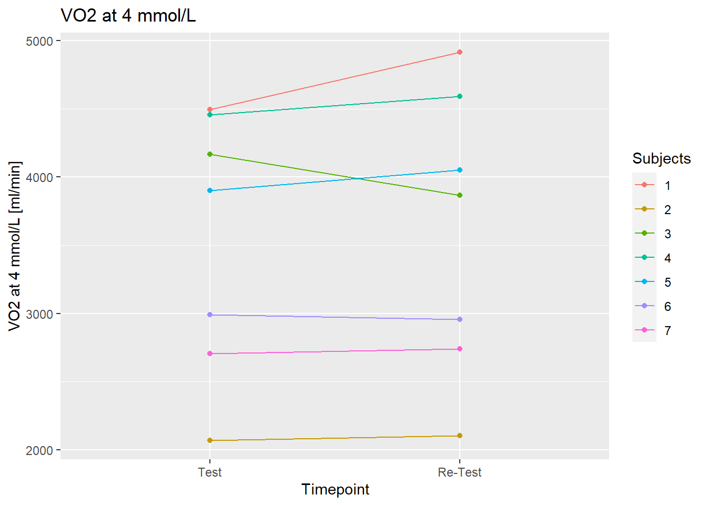
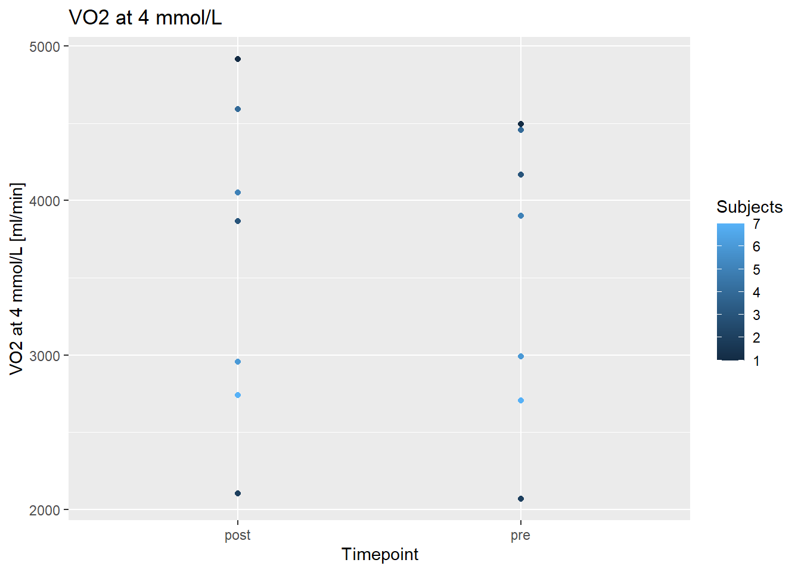

# A tibble: 1 × 4
s m te cv
<dbl> <dbl> <dbl> <dbl>
1 217. 3573. 154. 4.30Laktatprofil Løping
Reliability VO2
Reliability Speed
# A tibble: 1 × 4
s m te cv
<dbl> <dbl> <dbl> <dbl>
1 0.550 13.2 0.389 2.96Figure 1 - VO2

Figure 2 - Speed

Table Descriptives
| Timepoint | Mean VO2 (mL/min) |
SD VO2 (mL/min) |
Mean Speed (km/h) |
SD Speed (km/h) |
|---|---|---|---|---|
| Test | 3,541.29 | 952.28 | 13.13 | 2.80 |
| Re-Test | 3,604.57 | 1,032.15 | 13.19 | 2.95 |
Bibliography
References
Hopkins, Will G. 2000. “Measures of Reliability in Sports Medicine and Science.” Sports Med, 15.